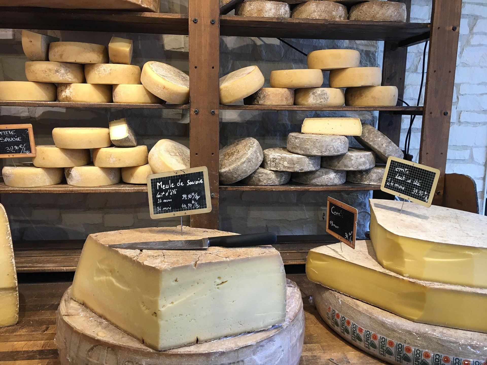
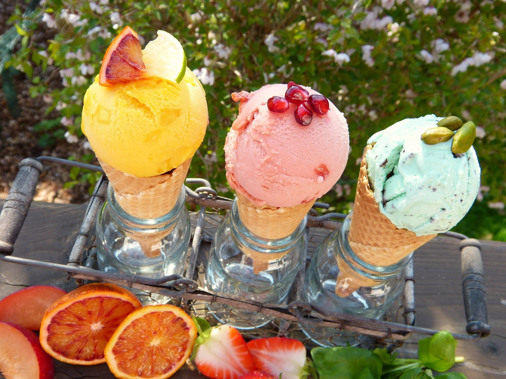
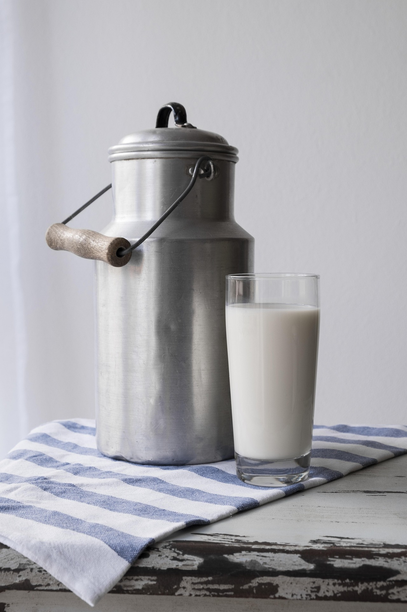
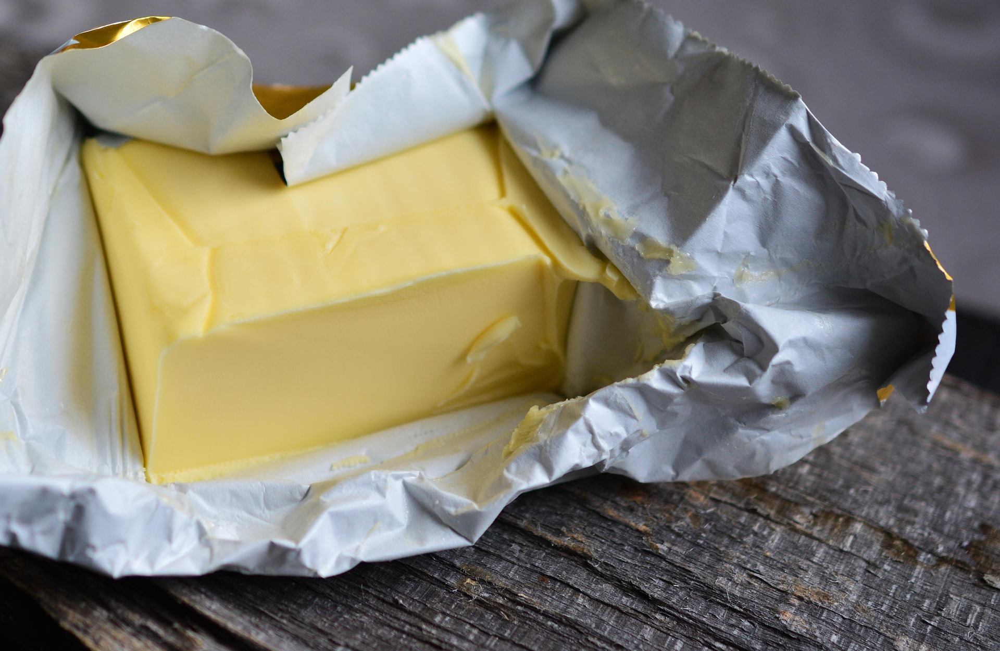
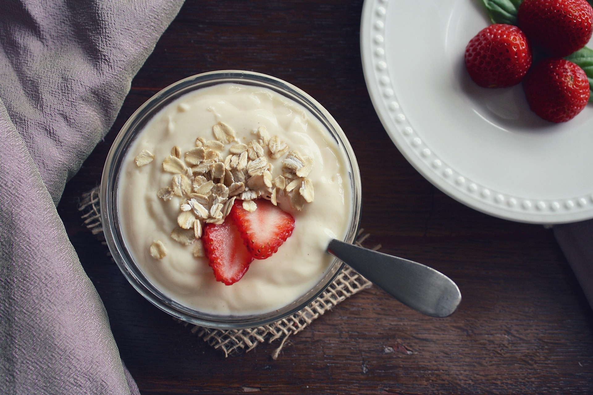
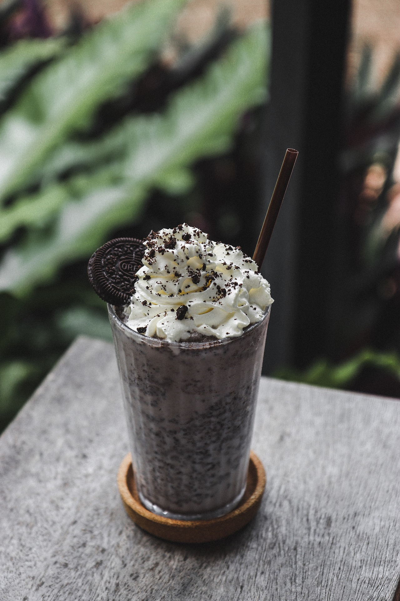

Products

Cheese
Cheese is a dairy product derived from milk, typically made by coagulating the milk protein (casein) and then pressing and aging the resulting curds. About 375,000 to 425,000 metric tons of cheese are produced annually in New Zealand. Cheese is generally consumed fresh or aged for various periods, giving a more complex flavor profile. Cheese is commonly used in dishes such as sandwiches, Mac and cheese, and pizza.

Ice Cream
Ice cream is a sweet, frozen dessert made from milk, cream, sugar, and various flavorings. It is typically served cold and can be enjoyed on its own or as a topping for other desserts. About 150 million to 160 million litres of ice cream are produced annually in New Zealand. Ice cream is a popular treat enjoyed by people of all ages, and can come in many different flavors and styles, such as vanilla, chocolate, and strawberry.

Milk
Milk is a nutrient-rich liquid produced by the mammary glands of mammals, particularly cows. It is a primary source of calcium, protein, and other essential nutrients. About 21 to 22.4 billion liters of milk are produced annually in New Zealand. Milk is commonly consumed as a beverage or used in various food products, including every item on this list. Milk is a fundamental component of many dairy-based recipes and is essential for a balanced diet, due to its rich nutritional profile.

Butter
Butter is a dairy product made by churning cream or milk. It is a solid fat that is commonly used in cooking and baking, as well as a spread for bread and other foods. About 150,000 to 200,000 metric tons of butter are produced annually in New Zealand. Butter is commonly used as a spread for bread and other foods, as well as an ingredient in various recipes. it is also used as a cooking fat.

Yogurt
Yogurt is a dairy product made by fermenting milk with bacterial cultures. It is a good source of protein, calcium, and probiotics, and is often consumed as a snack or used in various recipes. About 100 million to 120 million liters of yogurt are produced annually in New Zealand. Yogurt is commonly consumed as a snack or used in various recipes, such as smoothies and parfaits. it also has various health benefits, and comes in many different flavors and consistencies, such as plain, vanilla, and fruit-flavored.

Milkshakes
Milkshakes are cold, thick drinks made by blending milk, ice cream, and flavorings. They are typically served in tall glasses and can be customized with various toppings and syrups. Milkshakes are a common treat enjoyed by people of all ages, and are a popular drink choice within restaurants and homes, and is generally considered as a dessert. They come in many different flavors and styles. These flavours could include vanilla, chocolate, and strawberry, as well as more exotic options, such as mango or cookies and cream.